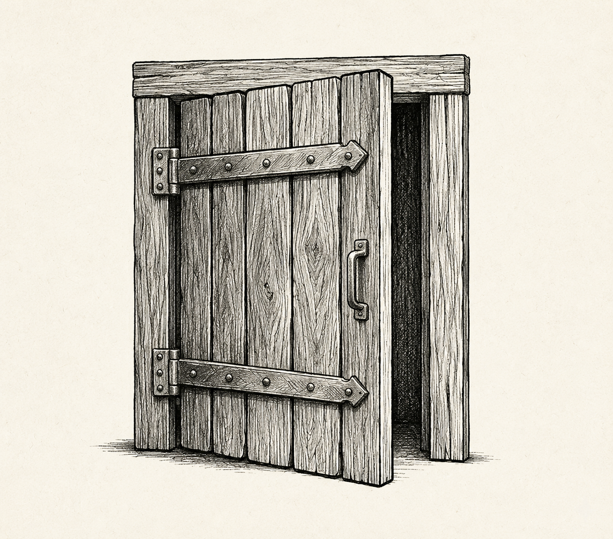
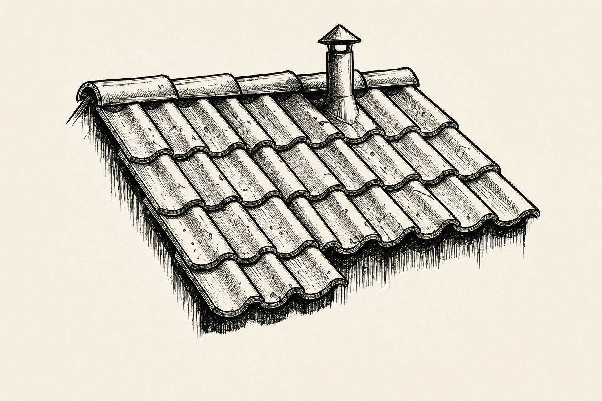
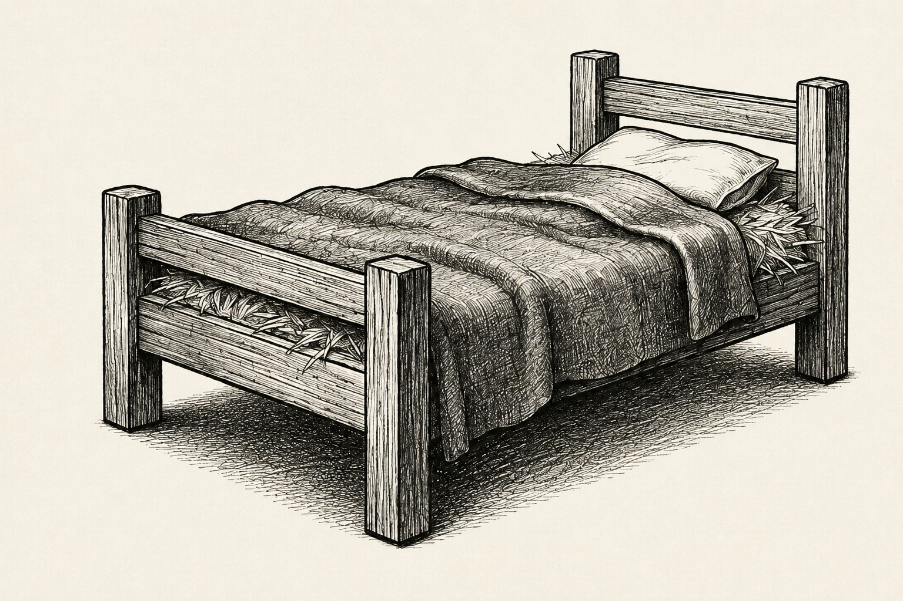
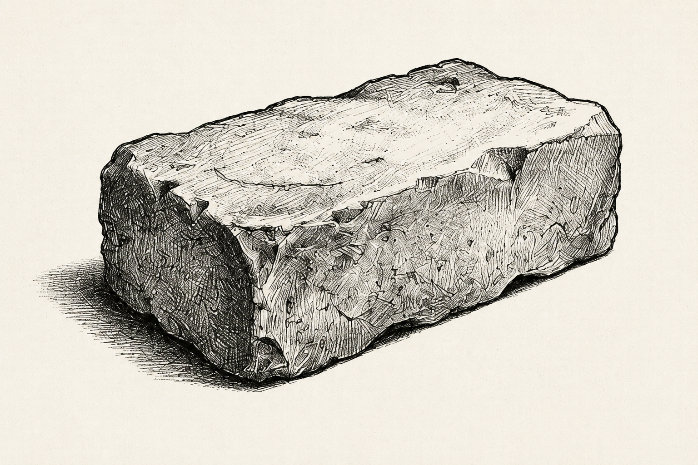

Haz clic en los elementos en el orden secuencial en el que se debe asegurar la casa.




La casa resiste con firmeza el soplido del lobo feroz. Lograste avanzar con seguridad.
Continuar Relato (Camino A)El orden inestable hizo que la casa se derrumbara ante el menor suspiro del lobo.
Continuar Relato (Camino B)